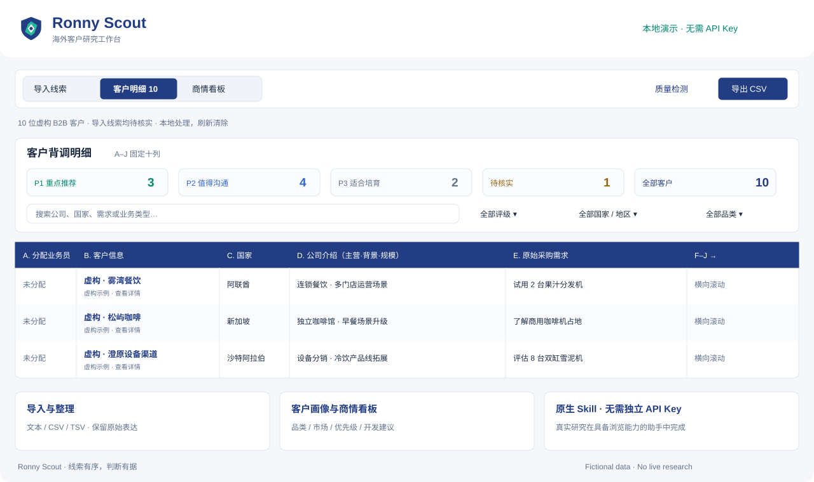

🔎 客户研究
Ronny Scout
「询盘是有了，
客户到底什么情况？」
从客户原本说了什么开始，查公司、官网和公开联系人，再把需求、合作潜力和下一步放进 A–J 研究表。查完得能接着做事。
演示客户为虚构；实时研究需要在 AI 助手中使用 Skill。ronny-scout / demo

客户明细 · 商情看板 · 原始线索 ↗👋 hi，我是 Ronny
做外贸，也捣鼓 AI。这里放一些工作里长出来的 Skills、小工具，还有暂时没想好怎么归类的东西。
🫠 研究怎么省时间，也花掉了一些时间。
工作里反复做的事，整理一下。需要哪个就拿哪个。
「询盘是有了，
客户到底什么情况？」
从客户原本说了什么开始，查公司、官网和公开联系人，再把需求、合作潜力和下一步放进 A–J 研究表。查完得能接着做事。
演示客户为虚构；实时研究需要在 AI 助手中使用 Skill。
客户明细 · 商情看板 · 原始线索 ↗下载对应 ZIP，解压并保留文件夹结构，在支持 Skills 的 AI 助手中安装。实时查资料需要宿主提供浏览能力；Skill 本身不要求单独配置开发者 API Key。
安装和下载说明 →有些能用，有些还是原型。都在各自慢慢长。
做客户开发，总会遇到一串小问题。公司查到了，产品对口吗？广告配好了，消息怎么接？目前就把这些问题一个个写进 Skill。先解决自己手边的事，再看看能不能帮到别人。
希望 AI 多懂一点业务，
我少解释两遍。🫠
三个独立下载包，使用反馈，还有中英双语的新衣服 📦
B2B Customer Scout 和 Meta Promotion Ops 放出来了 🌱
Scout 的表格、安装指南和演示，陆续补齐 🔎
我是 Ronny，做外贸运营和 B2B 数字营销。做过阿里国际站运营，现在也在做商业设备出口和海外客户开发。
对 AI 的兴趣，大概就是看到重复步骤，总想试试能不能省掉。然后再给自己开几个新坑。
哪步有帮助，哪里卡住了，都可以说。好用想听，不好用也想听 😂
留两句 →反馈公开且自愿。别把真实客户、私人联系方式和内部文件一起贴上来。